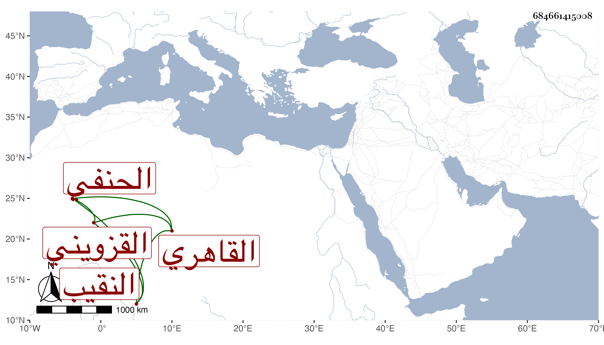

0902Sakhawi.DawLamic.ITO20230111-ara1.EIS1600.684661415008
Biography ID: 684661415008
أحمد بن عبد الله بن أحمد بن محمد بن محمد بن محمد بن يوسف بن محمد الشهاب بن الجمال بن الشهاب بن إمام الدين بن السيف بن الفخر أبي المحاسن بن القاضي الشمس القزويني ثم القاهري الحنفي النقيب والد محمد الآتي . قال شيخنا في أنبائه ولد سنة إحدى وستين وسبعمائة وكان حنفيا يستحضر كثيرا من الأحكام المتعلقة بمذهبه وباشر النقابة عند ابن الطرابلسي وولده مدة ، ثم لما عزل بابن العديم اتصل هو بالجلال البلقيني فقرره نقيبا مضافا لغيره وكان لا بأس به لولا مكر فيه ودهاء ورام الاستقرار بعده عند الولي العراقي فأبعده فلما صرف بابن البلقيني الأصغر خدمه إلى أن مات وذلك في ربيع الأول سنة ست وعشرين بعد ضعف شديد مدة .
